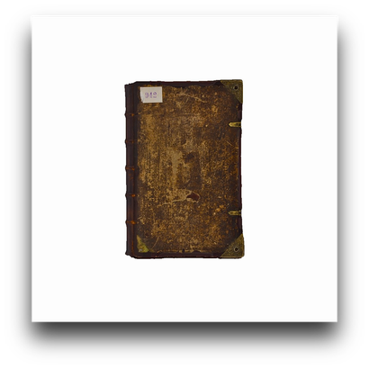
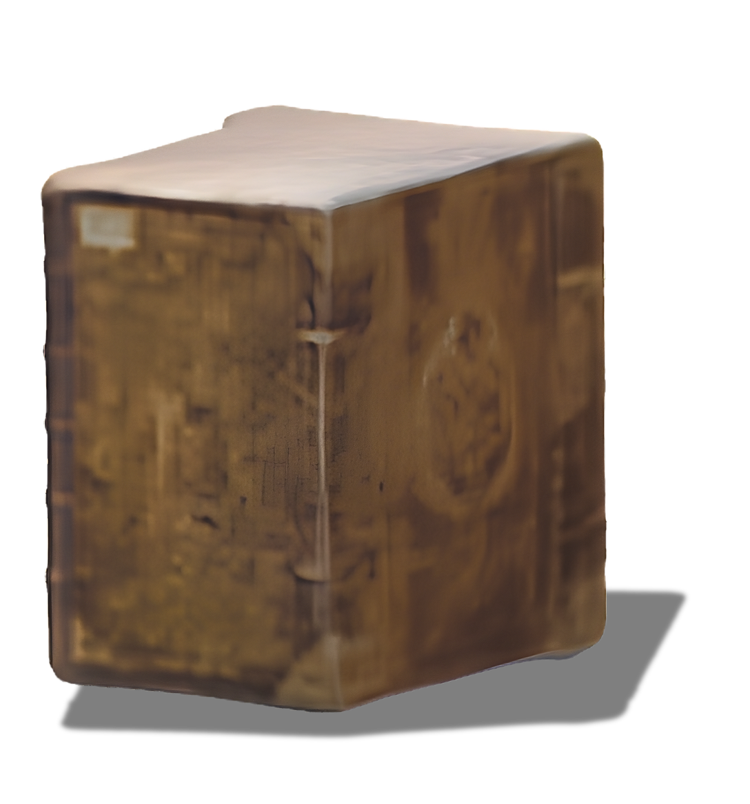
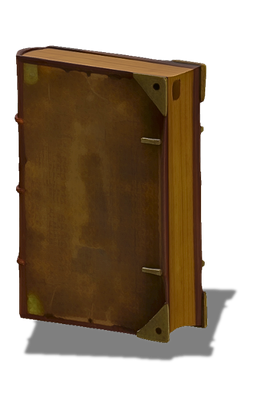

Extract perceptual targets
Frozen perception models describe the input object through language-derived semantic vectors, spatial visual representations, or intermediate depth features.
PERCEPTION → GENERATION → RECONSTRUCTION
Single-view 3D reconstruction is a challenging task in computer vision due to information missing from the single input image. Generative model-based approaches can produce plausible 3D objects from a single image, thanks to data-driven priors learnt from rich and large-scale datasets. However, plausible generation does not guarantee fidelity to the geometry and appearance of the particular input object. Inspired by object perception in human vision, we propose OPERA, a framework that guides multi-view diffusion sampling with pretrained perception models through lightweight alignment modules. These modules are trained independently while both the generative and perception models remain frozen, allowing multiple signals to be combined at inference without joint fusion training. We apply OPERA to two state-of-the-art single-view 3D reconstruction baselines on two standard datasets. We also compare our method with recent image-to-3D models. We provide in-depth analyses of the design choices and their effects across datasets and backbones.
01 / BACKGROUND
Imagine standing before The Thinker in a museum and wanting to share its full beauty with friends. A photograph captures only one view, leaving much of its detail and expressive character unseen. What if that single image were enough to reconstruct the sculpture in 3D, letting your friends explore it from every angle?
The goal is to recover that particular object—its proportions, surface patterns and distinctive features—not merely a plausible object of the same category. This is instance fidelity. A single photograph leaves unseen surfaces ambiguous, and generative completion can introduce convincing details that do not belong to the original object. OPERA asks whether knowledge from pretrained perception models can help constrain this completion. Semantic and geometric cues extracted from the input image guide multi-view generation towards the observed object. The interactive examples below let you explore selected guided reconstructions; the comparisons later on show what changes relative to the baseline.
Choose an object to explore its reconstruction.
Rotate, zoom and inspect the reconstructed surface.
Loads a third-party viewer from Sketchfab.Select any thumbnail to load its 3D reconstruction here. Drag to rotate; scroll or pinch to zoom.
Open on Sketchfab ↗02 / APPROACH
OPERA brings independently trained perceptual capabilities into multi-view diffusion sampling.
OPERA adds perceptual guidance to an existing reconstruction pipeline rather than training a replacement generator. Frozen perception models provide semantic and geometric targets from the input image. Lightweight generation–perception alignment modules (GPAMs) predict these targets from intermediate generative features, making their discrepancies usable as sampling-time objectives.
The representation matters: global semantic vectors and spatial feature maps need different alignment objectives, and a target from the input view cannot be imposed unchanged on every generated viewpoint. Each GPAM is trained independently; their signals can then be used alone or combined at inference without joint fusion training.
Frozen perception models describe the input object through language-derived semantic vectors, spatial visual representations, or intermediate depth features.
A generation–perception alignment module (GPAM) predicts each target from intermediate U-Net features. Each module is trained independently; the underlying models stay frozen.
Alignment gradients update the latents. The frozen U-Net then recomputes its prediction before the denoising step. Generated views are used for surface reconstruction.
Train the alignment. Keep the knowledge.
Combine perceptual signals at inference without joint fusion training.
03 / RESULTS
We study semantic and depth guidance separately and together on Era3D and Wonder3D, using GSO and OmniObject3D. The central comparison is each backbone with and without OPERA: first in benchmark metrics, then in reconstructed objects and generated views.
EXPLORATORY BENCHMARK RESULTS
Mean Chamfer Distance reduction with combined guidance on the primary backbone, Era3D, relative to its unguided baseline.
30 evaluated objects
100 evaluated objects
RESULTS / OBJECT-SPECIFIC FIDELITY
A method for guiding an existing reconstruction pipeline, not a new reconstruction backbone.



Guidance reduces the bulk of the book reconstruction, bringing its proportions closer to the reference.
Era3D with and without OPERA is the same-backbone comparison. SAM 3D Objects is an external image-to-3D reference. Individual renders are fitted to the display tiles; use the full figure to inspect the original presentation.
RESULTS / COMPLEMENTARY SIGNALS
Guide with semantic or depth information separately—or bring them together during sampling.
04 / MORE QUALITATIVE RESULTS
Selected colour and normal outputs with combined guidance, across two backbones and three datasets.